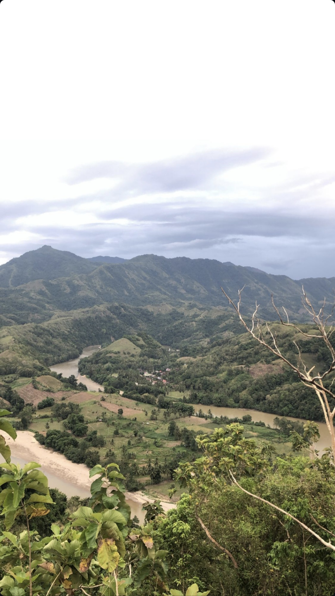
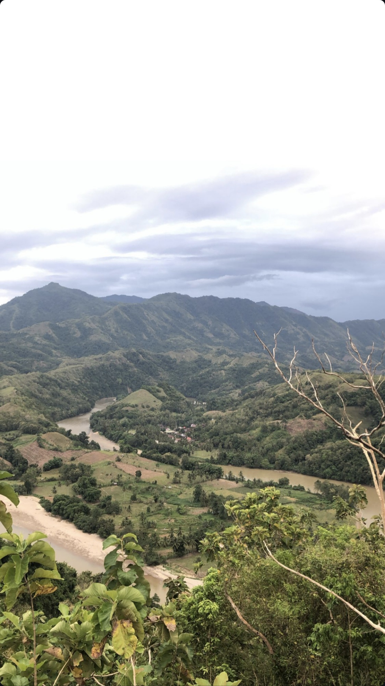

Mengenai Saya
Saya bernama Fatra Syamsuddin, biasa dipanggil "Fatra". Lahir di Enrekang pada tanggal 12 Februari 2005. Sekarang saya sedang menempuh pendidikan tinggi di Universitas Negeri Makassar atau lebih dikenal dengan sebutan "UNM" dan memilih program studi Bisnis Digital.
Alasan saya memilih prodi ini dikarenakan saya ingin mendapatkan skill dan wawasan seputar dunia bisnis yang digabungkan dengan ilmu IT.


 
